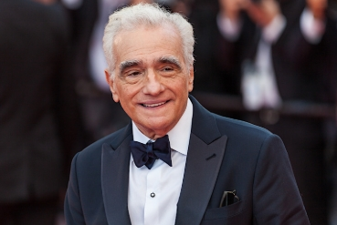
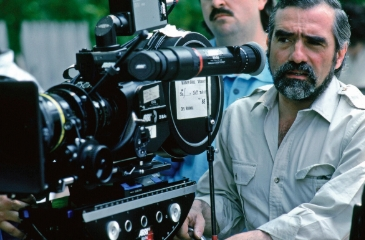
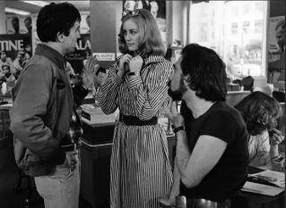

His Origins
Born on November 17, 1942, in New York, Martin Charles Scorsese was raised in the Manhattan neighborhood of Little Italy. This environment served as a significant influence on his later thematic explorations of urban life and cultural identity. Due to severe childhood asthma, Scorsese was unable to participate in organized sports, which led to a focused interest in cinema and frequent visits to local theaters. His upbringing within a devout Roman Catholic family also introduced concepts of guilt and redemption, which are recurring themes throughout his professional body of work.
Scorsese originally pursued a vocation in the priesthood, entering a cathedral preparatory seminary in 1956. He later redirected his focus toward communications and film, enrolling at New York University’s Washington Square College. He completed his Bachelor of Arts in 1964 and a Master of Fine Arts in 1966. During this period, he produced several influential short films, including The Big Shave (1967). His transition from a student filmmaker to a prominent figure in the "New Hollywood" movement of the 1970s was marked by a shift toward gritty realism and character-driven narratives that challenged traditional studio conventions.

Defining New Hollywood
The directorial style of Martin Scorsese is characterized by several distinct technical and narrative hallmarks. Technically, his work often features complex camera movements, such as the extensive use of the Steadicam to create fluid, immersive long takes. He is also noted for his frequent collaboration with film editor Thelma Schoonmaker, whose rhythmic, fast-paced cutting style has become a defining feature of Scorsese's filmography. Narratively, his films often focus on the "anti-hero," exploring themes of masculine identity, social isolation, and the moral complexities of organized crime and religious faith.
This stylistic evolution was a cornerstone of the "New Hollywood" era, a period of cinematic history spanning roughly from the late 1960s to the early 1980s. Also known as the "American New Wave," this movement saw a shift in power from traditional studio executives to a new generation of "auteur" directors. These filmmakers, including Scorsese, Francis Ford Coppola and Steven Spielberg were heavily influenced by European art-house cinema and sought to explore counter-cultural themes, moral ambiguity, and graphic realism.

Scorsese's contribution to this era was pivotal! His 1973 film Mean Streets and 1976's Taxi Driver provided a template for the modern urban drama. By focusing on flawed, alienated protagonists and the grit of the American city, he helped move Hollywood away from sanitized "Golden Age" spectacles toward more challenging, personal storytelling. His ability to merge high-art aesthetics with visceral, street-level narratives ensured that the New Hollywood movement remained both critically respected and culturally relevant, cementing his role as a primary architect of modern American film.